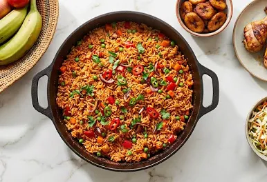

West Africa
West African food traditions can be found in countries such as Nigeria, Ghana, Senegal, and Ivory Coast. Meals often bring together locally grown crops, seafood, meat, and vegetables.
The region is known for richly seasoned dishes such as Jollof Rice, prepared with rice, tomatoes, peppers, and spices. Groundnut Soup and Egusi Soup are also popular, often served with fufu or other traditional starchy foods.
Common Ingredients
Palm oil
Groundnuts
Cassava
Plantain
Peppers
Popular Dishes
Jollof Rice, Egusi Soup, Fufu, and Suya.